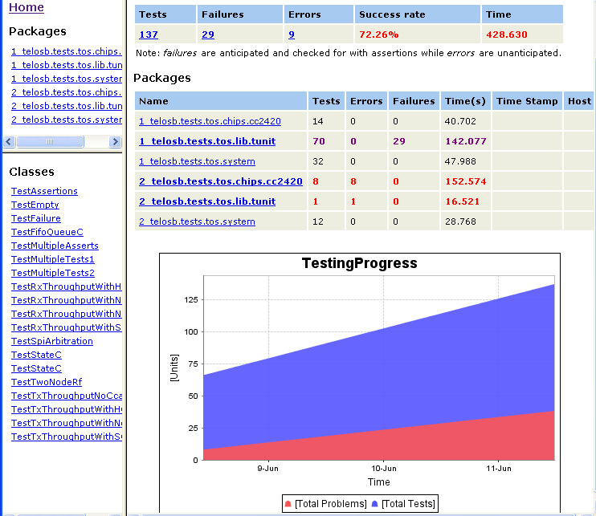
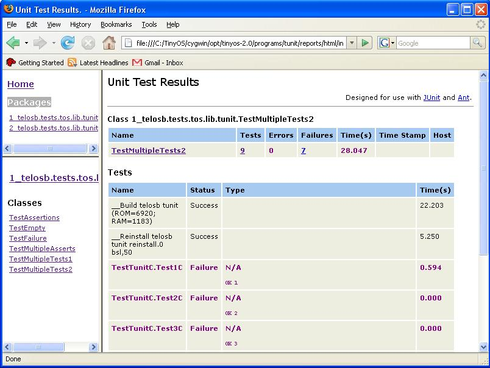

TUnit is an embedded automated unit testing framework for TinyOS
built by Rincon Research Corporation. The goal is to make
building and running unit tests as easy as possible.
TUnit automatically builds, installs, runs, cleans up, and
reports results for TinyOS test unit applications.
Generates HTML reports using ant's junitreport task (pictures
below)
Gathers statistics automatically on ROM, RAM, total tests/total
failures, and any other performance attribute the embedded side needs
logged over time.
Different test runs allows the developer to define multiple
combinations of motes to run test suites.
Test suites can be filtered based on if they're applicable to the
given mote combination in the current test run.
Lava lamps can be controlled wirelessly if the hardware is
provided (software included, hardware implementation required)
Unit testing TinyOS requires a different philosophy than regular unit
testing on a computer. Whereas something like JUnit can run all
the tests quickly and on one platform, TinyOS has to worry about
multiple platforms and different combinations of platform types working
together.
A clear distinction must be made between unit testing and
integration/user testing. Although TUnit can be used to perform
many types of integration testing, the focus here is on unit
tests. Units are small, testable, independent pieces of
code. TinyOS and nesC make unit testing easy because the code is
already modular. We can easily take a module, isolate it, and
unit test every aspect of it to assert the desired behavior.
Isolation of some code may mean multiple nodes still need to be within
RF vicinity to support it.
Unit testing is good for your
soul. Not only will your code function better, but you'll
be a better programmer.
Designing is easier.
You will design code to be tested, and that implies modularity.
Modularity is a good thing.
Implementation is easier. Using
some of the concept of Extreme
Programming, you can know when your implementation is finished
based on the requirements you set out to meet.
Refactoring is easier.
Ever tried modified code, but something else breaks? Not anymore,
now that you can unit test TinyOS effectively.
Tracking some types of TinyOS
performance over time is now a possibility. Using TUnit's
Statistics, you can track how well a module behaves. For example,
using TUnit, it's possible to keep a log over time of how much
throughput a given radio stack sees, what its acknowledgement success
rate is, etc.
Break TinyOS. But
don't re-break it. Be the first to break a module and know about
it.
HTML Report Examples The HTML reports generated are your standard JUnit/Ant
reports, but they're hooked into the embedded side. Just by
making a new instance of the TestCaseC() component in your embedded
code, TUnit will automatically extract information and fill in test
names and whatever else it can find from that code, so you can focus on
your test and forget about the rest.


And... TUnit is currently running
wireless lava lamps at Rincon Research Corporation.